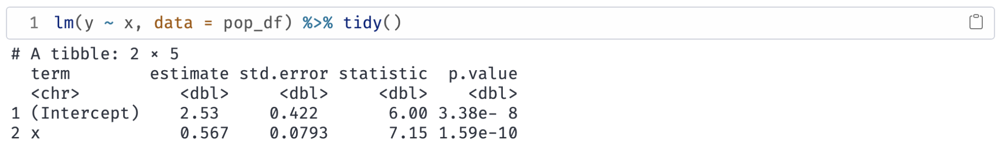
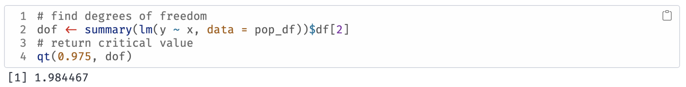
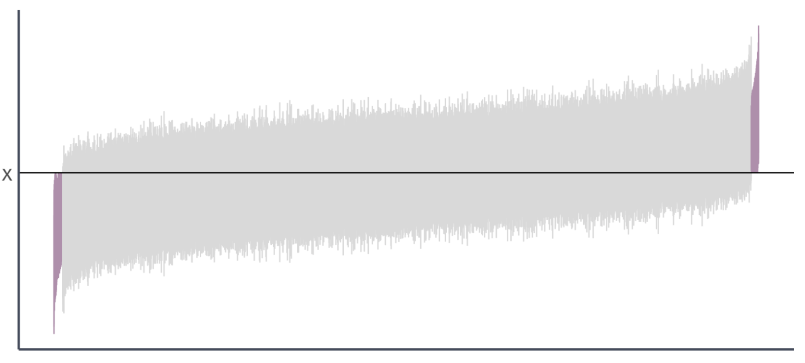
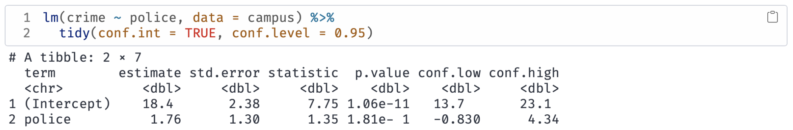
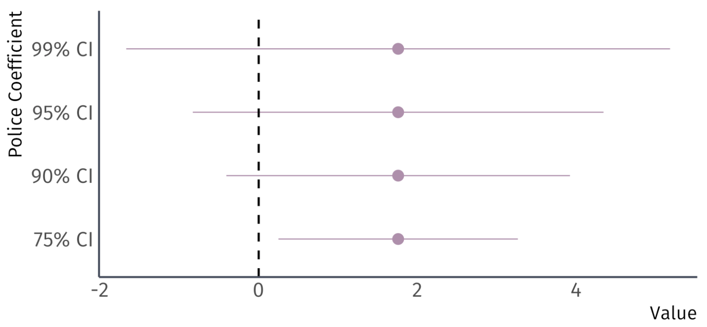

Confidence intervals
Until now, we have considered point estimates of population parameters.
- Sometimes a range of values is more interesting/honest.
. . .
We can construct \((1-\alpha)\cdot100\)-percent level confidence intervals for \(\beta_1\)
\[ \hat{\beta}_1 \pm t_{1-\alpha/2, n-2} \, \mathop{\hat{\text{SE}}} \left( \hat{\beta}_1 \right) \]
. . .
\(t_{1-\alpha/2,n-2}\) denotes the \(1-\alpha/2\) quantile of a \(t\) distribution with \(n-2\) degrees of freedom.
Confidence intervals
Q: Where does the confidence interval formula come from?
. . .
A: Formula is a result from the rejection condition of a two-sided test.
Reject \(H_0\) if
\[ |t| > t_\text{crit} \]
. . .
The test condition implies that we:
Fail to reject \(H_0\) if
\[ |t| \leq t_\text{crit} \]
or, \[ -t_\text{crit} \leq t \leq t_\text{crit} \]
Confidence intervals
Replacing \(t\) with its formula gives:
Fail to reject \(H_0\) if
\[-t_\text{crit} \leq \frac{\hat{\beta}_1 - \beta_1^0}{\mathop{\hat{\text{SE}}} \left( \hat{\beta}_1 \right)} \leq t_\text{crit} \]
. . .
Standard errors are always positive, so the inequalities do not flip when we multiply by \(\mathop{\hat{\text{SE}}} \left( \hat{\beta}_1 \right)\):
Fail to reject \(H_0\) if \[ -t_\text{crit} \mathop{\hat{\text{SE}}} \left( \hat{\beta}_1 \right) \leq \hat{\beta}_1 - \beta_1^0\leq t_\text{crit} \mathop{\hat{\text{SE}}} \left( \hat{\beta}_1 \right) \]
Confidence intervals
Subtracting \(\hat{\beta}_1\) yields
Fail to reject \(H_0\) if \[ -\hat{\beta}_1 -t_\text{crit} \mathop{\hat{\text{SE}}} \left( \hat{\beta}_1 \right) \leq - \beta_1^0 \leq - \hat{\beta}_1 + t_\text{crit} \mathop{\hat{\text{SE}}} \left( \hat{\beta}_1 \right) \]
. . .
Multiplying by -1 and rearranging gives
Fail to reject \(H_0\) if
\[ \hat{\beta}_1 - t_\text{crit} \mathop{\hat{\text{SE}}} \left( \hat{\beta}_1 \right) \leq \beta_1^0 \leq \hat{\beta}_1 + t_\text{crit} \mathop{\hat{\text{SE}}} \left( \hat{\beta}_1 \right) \]
Confidence intervals
Replacing \(\beta_1^0\) with \(\beta_1\) and dropping the test condition yields the interval:
\[ \hat{\beta}_1 - t_\text{crit} \mathop{\hat{\text{SE}}} \left( \hat{\beta}_1 \right) \leq \beta_1 \leq \hat{\beta}_1 + t_\text{crit} \mathop{\hat{\text{SE}}} \left( \hat{\beta}_1 \right) \]
which is equivalent to
\[ \hat{\beta}_1 \pm t_\text{crit} \, \mathop{\hat{\text{SE}}} \left( \hat{\beta}_1 \right) \]
Confidence intervals
Main insight:
- If a 95 percent confidence interval contains zero, then we fail to reject the null hypothesis at the 5 percent level.
- If a 95 percent confidence interval does not contain zero, then we reject the null hypothesis at the 5 percent level.
Generally, a \((1- \alpha) \cdot 100\) percent confidence interval embeds a two-sided test at the \(\alpha \cdot 100\) level.
Confidence intervals Ex.

. . .

. . .
95% confidence interval for \(\beta_1\) is:
\[ 0.567 \pm 1.98 \times 0.0793 = \left[ 0.410,\, 0.724 \right] \]
Confidence intervals
We have a confidence interval for \(\beta_1\), i.e., \(\left[ 0.410,\, 0.724 \right]\)
What does it mean?
. . .
Informally: The confidence interval gives us a region (interval) in which we can place some trust (confidence) for containing the parameter.
. . .
More formally: If we repeatedly sample from our population and construct confidence intervals for each of these samples, then \((1-\alpha) \cdot100\) percent of our intervals (e.g., 95%) will contain the population parameter somewhere in the interval.
Confidence intervals
Going back to our simulation…
. . .
We drew 10,000 samples (each of size \(n = 30\)) from our population and estimated our regression model for each sample:
\[ Y_i = \hat{\beta}_1 + \hat{\beta}_1 X_i + \hat{u}_i \]
. . .
The true parameter values are \(\beta_0 = 0\) and \(\beta_1 = 0.5\)
. . .
Let’s estimate 95% confidence intervals for each of these intervals…
Confidence intervals
From our previous simulation, 97.7% of 95% confidence intervals contain the true parameter value of \(\beta_1\).

Ex. Association of police with crime
You can instruct tidy to return a 95 percent confidence interval for the association of campus police with campus crime:

Ex. Association of police with crime

Four confidence intervals for the same coefficient.